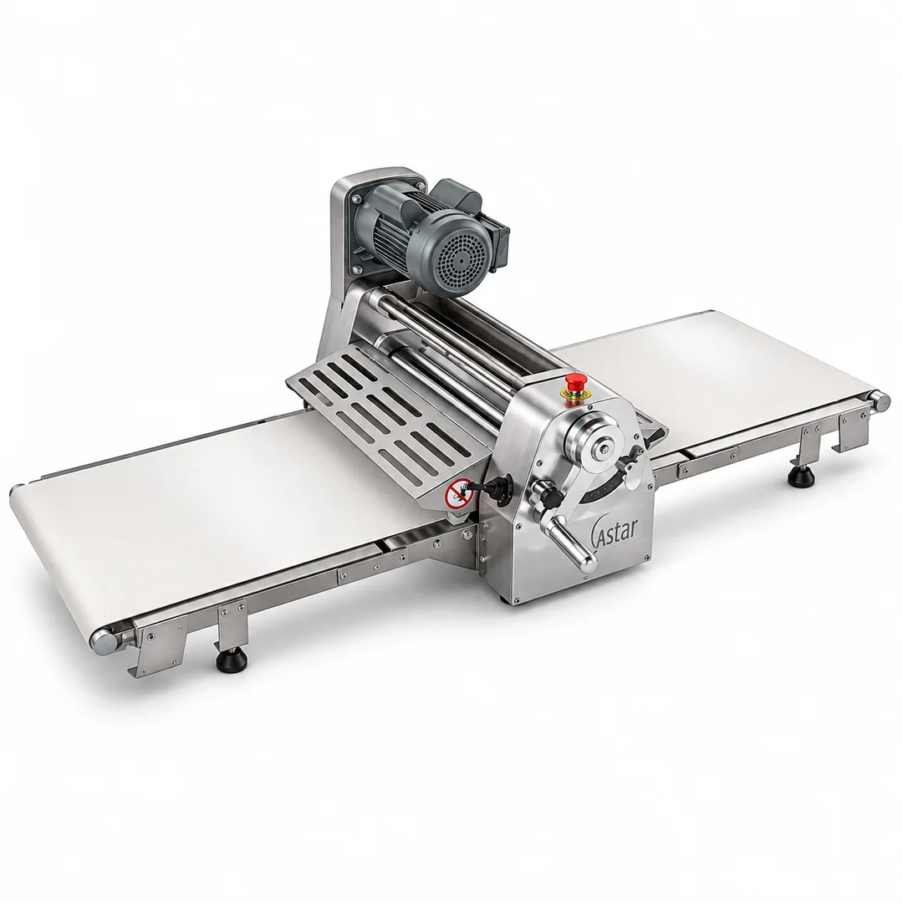

Тип теста, нужная толщина, рабочая ширина, размер помещения и способ очистки.

Astar / DT-016
01 / ФОТО МОДЕЛИВизуализация модели
Тестораскатки / DT-016
Тестораскаточная машина Astar AS-450U
Напольная тестораскаточная машина европейского типа.
Рабочая лента 430×1800 мм
0,55 кВт
220/380 В
Стоимость оборудованияПо запросуКомплектация, наличие и сроки уточняются при запросе.
Как сравниваем оборудование ↗ТЕХНИЧЕСКАЯ ЧАСТЬПараметры
Параметры
из каталога.
Перед закупкой запросите паспорт, актуальную комплектацию и согласуйте испытания на своём сырье.
Подходит для направленийПолуфабрикатыПекарни и кондитерские
Характеристики
- Рабочая лента 430×1800 мм
- 0,55 кВт
- 220/380 В.
Данные каталога не заменяют заводскую спецификацию и договорные условия.
ПЕРЕД ЗАПРОСОМ ЦЕНЫ
Подойдёт ли эта машина для вашего производства?
Модели с похожими названиями могут отличаться по комплектации. Обсудим, что важно проверить именно в вашем случае.
Все вопросы перед покупкой оборудования ↗Актуальную комплектацию, допустимую загрузку, питание, требования к обслуживанию и возможность показать работу на вашем продукте.
Полную стоимость, сроки, состав поставки, документы, гарантийные условия и контакт для технических вопросов.


ЗА КАТАЛОГОМ — РЕАЛЬНЫЕ ЛЮДИ
Подберём не просто модель, а решение под ваш цех.
Мы лично бываем на китайских производствах и встречаемся с представителями заводов. По вашему запросу уточним комплектацию, возможность проверки на продукте, условия поставки и дальнейшую поддержку.
На фото — поездка команды на ASTAR. Снимок не является подтверждением испытаний или поставки именно этой модели.
Посмотреть фотографии поездок ↗